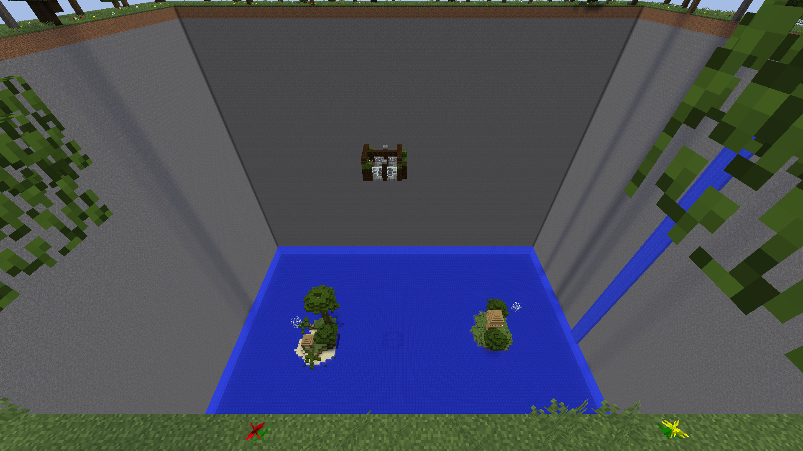

<div class="container">
  <div class="row">
    <div class="col-lg-8 col-md-10 mx-auto">

      <span>Hey there! My name is Hielke, I'm a Minecraft content creator.<br>Here's all you need to know about
        me!<br><br>
        <h5>The Beginning</h5>
        My journey started back in 2013, when I first discovered a block in Minecraft called the command block. I wanted
        to create something cool with it, so I created a simple TNT PvP map, called
        <a href="https://www.minecraftmaps.com/pvp-maps/bomb-battle" target="_blank">Bomb Battle</a>.
      </span>
      <figure class="figure">
        
        <figcaption class="figure-caption">I know it's not the prettiest map, alright? &#128521;</figcaption>
      </figure>
      <span>
        First I only played the map with my friends, but then they suggested to post the map online and let other people
        enjoy it too. That's how I got into mapmaking.<br>
      </span>
      <p>
        <h5>The Parkour</h5>
        After I posted a few minigame maps, I wanted to create something else. I've always enjoyed playing parkour maps
        in
        Minecraft, so my idea was to create one myself. I created a map with 100 different rooms, came up with a catchy
        name (Parkour Paradise), and posted it online.
        <figure class="figure">
          
          <figcaption class="figure-caption">Beautiful, isn't it?</figcaption>
        </figure>
        To my surprise, the map blew up, and now Parkour Paradise has over 170 thousand downloads! That's when I knew I
        had talent for map making, specifically parkour maps.<br>
        Over the years I've created several parkour maps.
      </p>
      <p>
        <h5>The Marketplace</h5>
        Since late 2019, I've become an official Minecraft Partner! This means I can offer my maps at the Minecraft
        Marketplace.<br>My current plan is to keep releasing maps for both the Java and Bedrock edition of
        Minecraft.<br><br>
        You can check out my maps <a href="/maps">here</a>!
      </p>
    </div>
  </div>
</div>